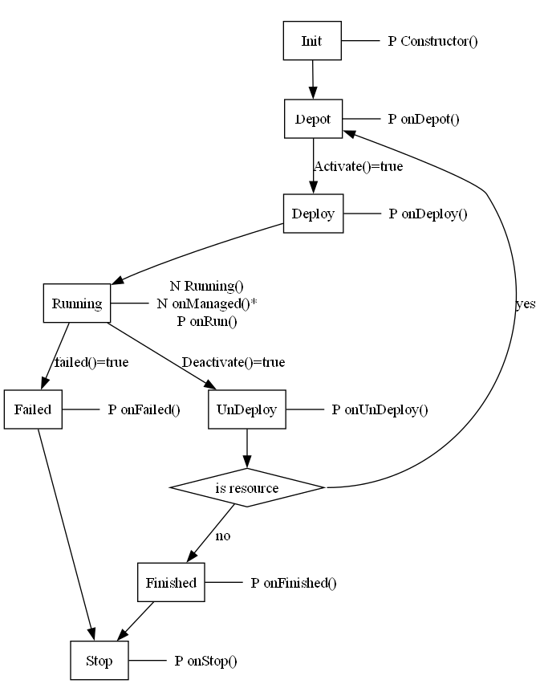

An agent, e.g, a resource agent, is associated with a property AgentState (from AgentAction). The AgentState indicates which state an Agent is at during runtime. The main states are;
| State name | Description |
|---|---|
| Depot | Agent is ready to be deployed |
| Running | Agent is running |
| Failed | Agent has failed |
| Finished | Agent is finished |
These states are visualised in the runtime viewer tree during runtime. Note, that there exist more states (see state chart figure below).
When an agent enters a state, two types of procedures can be triggered:
- A normal procedure must complete within a defined time limit.
- It should not block or lock the agent, as this may affect responsiveness and performance.
These procedures are not predefined. Instead, they can be implemented by the user within the AgentAction class as custom methods.

The constructor for an AgentAction is executed once when the agent starts. It runs only a single time and can be used to initialize variables, or perform other one-time setup tasks.
The onDepot procedure is called once when the agent enters the Depot state. In the simplified example below, onDepot is used to automatically deploy a resource. Note, this logic should not be used for parts, as it would result in an infinite number of parts being generated. It also prevents the user from undeploying the resource, since it would be immediately redeployed.
The onDeploy procedure is called once when the agent enters the Deploy state.
The procedure Runnning() is a normal (N) procedure, a procedure that is constantly called, i.e., for each cycle the procedure is called and is expected to return immediately.
The following example will use the Running to to indicate that the agent is running. In this case a better approach to write a single message might be to utilise the (P) procedure onRun() instead.
The onRun procedure is called once when the agent enters the Running state.
The onFail procedure is called once if the agent enters the Failed state.
The onUndeploy procedure is called once the agent is deactivated or undeployed.
The onFinished procedure is called once a part agent is finished.
The onStop procedure is called as the final stage of any agent's lifecycle, just before the agent stops. It can be used to perform final cleanup tasks. Note that the runtime environment may already be shutting down at this point, so interactions with other agents should be avoided.
Precondition functions are boolean expressions used to determine when an agent should transition from its current state to a new one. They are written in Structured Text and evaluated continuously during execution.
If the agent is in the Depot state and Activate returns true the agent will be deployed.
If the agent is in the Running state and Failed returns true the agent will be transfered to the failed state.
If the agent is in the Running state and Deactivate returns true the agent will be transfered to the UnDeploy state.
In CMAS there are two global settings, available in Preferences → Runtime, named RetryBackoff and RetryJitter. When enabled or disabled, they affect the behavior of all agents in the system. These settings are used when an agent attempts to interact with another agent that is currently busy or unavailable or if something goes wrong. In such cases, the normal behavior is to retry after a short waiting period (a delay).
When RetryJitter is enabled, retry delays include a small random variation. This helps prevent many agents from retrying at exactly the same time, which can otherwise lead to synchronization effects, congestion peaks, and repeated resource conflicts in distributed multi-agent systems.
Example:
Without jitter:
With jitter enabled:
Disabling jitter can be useful during debugging, deterministic testing, or performance measurements where repeatable timing behavior is required. In normal operation, it should typically remain enabled.
When RetryBackoff is enabled, the retry delay increases exponentially after each failed attempt. This reduces retry pressure during overload situations or temporary failures.
Example sequence with backoff enabled:
50 ms -> 100 ms -> 200 ms -> 400 ms -> ...
When disabled, retries use a constant delay (typically 50 ms for a normal negotiation but can vary depending on type of action). Exponential backoff is commonly used in distributed systems, networking, and multi-agent coordination to improve stability and reduce contention when many agents compete for the same resources. Disabling backoff can be useful during debugging, simulations, or scenarios where constant retry intervals are preferred.
RetryBackoff has a predefined min delay of 50 ms and a max delay of 750 ms. Note, the RetryJitter might render a total value lower than 50 ms or higher than 750 ms.
In CMAS, retry delays are default computed using exponential backoff combined with optional randomized jitter. In the following table the min delay of 50 ms and max of 750 ms is used as a base and the effect of Backoff and Jitter is shown.
Retry n: 0 1 2 3 4 5 No backoff: 50 50 50 50 50 50 Backoff: 50 100 200 400 750 750 With jitter: 55 120 180 430 710 600